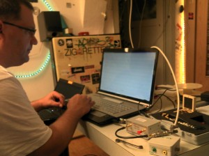
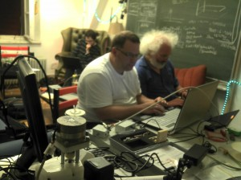
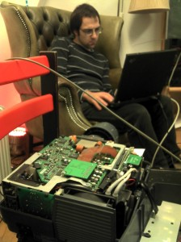

Every Thursday there is a Meeting day in the Hackerspace Ulm (also known as the Freiraum). New people are always welcome to join us.
Last Thursday (22nd of August 2013) there were lots of things happening in the Hackerspace. We build some ham radio (Funkamateur) antennas and then we measured them using Vector Network Analyzer
(VNA). The antennas were surprisingly good although we did them quickly using some cheap basic material. The nature of laws don’t respect the price of building materials ;)
We also found out that the VNA is a really good instrument for testing different kind of antenna types that people themselves invent. Its really easy and quick just to make an antenna and them measure it. Then you can make some changes and measure again. This could be called evolutionary antenna building.
There were also other things happening. Some people presented their projects ideas and other people were giving comments and new ideas to them. This way the projects can get lots of input and some problems can be solved. It’s also an opportunity to get other people interested of the project and get them on board. To make something together makes it more fun.

Measuring a discone antenna with vector network analyzer. Discone antennas are wideband antennas (in this case about 80 – 500 MHz).

Making modifications to a data projector.
{kind=link}
{kind=link}
{kind=link}